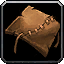
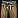
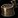
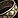

This Classic WoW Leatherworking Leveling Guide will show you the fastest and cheapest way how to level your Leatherworking skill up from 1 to 300.Leatherworking is the best combined with Skinning, and I highly recommend to level these professions together. It will be a lot easier to get the needed leathers if you have Skinning. You can also just buy the materials at the Auction House, but then you will need a lot of gold.
I recommend trying Zygor's 1-60 Leveling Guide if you are still leveling your character or just starting a new alt. It will help you to reach level 60 a lot faster.
Shopping List
NOTE: You can buy the threads, dyes, and salt from Leatherworking Supply vendors near your trainer.
- 57x Ruined Leather Scraps
- 470x Light Leather
- 335x Medium Leather
- 20x Heavy Hide
- 195x Heavy Leather
- 650x Thick Leather
- 400x Rugged Leather
- 100x Runecloth
Classic Leatherworking Trainer Location
To become an Apprentice Leatherworker you need to reach level 5 and find a Leatherworking trainer.
Just click on any of these links below to see the trainer's exact location. You can also walk up to a guard in any city and ask where the Leatherworking trainer is, then it will be marked with a red flag on your map
Horde trainers:
- Kamari in Orgrimmar.
- Dan Golthas in Undercity.
- Mak in Thunder Bluff.
- Chaw Stronghide in Mulgore.
- Shelene Rhobart in Tirisfal Glades.
Alliance trainers:
- Randal Worth in Stormwind City.
- Gretta Finespindle in Ironforge.
- Darianna in Darnassus.
- Nadyia Maneweaver in Teldrassil
- Adele Fielder in Elwynn Forest
Apprentice Leatherworking
1 - 55
- 1-20
19x Light Leather - 57 Ruined Leather ScrapsMake the next recipe if you don't have Ruined Leather Scraps.
- 20-45 or 1-45
40x Light Armor Kit - 40 Light Leather
- 45-55
20x Handstitched Leather Cloak - 40 Light Leather, 20 Coarse Thread
Journeyman Leatherworking
You can only train Leatherworking past 75 if you learn Journeyman Leatherworking. Not every Leatherworking trainer will teach you this skill, you have to find an Expert Leatherworker. (Requires level 10)
You can learn Journeyman Leatherworking from these NPCs below:
Horde trainers:
- Arthur Moore in Undercity.
- Karolek in Orgrimmar.
- Tarn in Thunder Bluff.
Alliance trainers:
- Simon Tanner in Stormwind City.
- Faldron in Darnassus.
- Fimble Finespindle in Ironforge.
55 - 137
- 55-100
50x Embossed Leather Gloves - 150 Light Leather, 100 Coarse Thread
- 100-125
40x Fine Leather Belt - 240 Light Leather, 80 Coarse ThreadMake as many Cured Medium Hide as you can if you farmed leathers and you got some Medium Hide. (or if it's cheap at the Auction House)
Keep both the Fine Leather Belt and the Cured Medium Hide because you can make Dark Leather Belt with them.
- 125-137
15x Dark Leather Boots - 60 Medium Leather, 30 Fine Thread, 15 Gray DyeMake as many Dark Leather Belt as you can if you made some Cured Medium Hide.
Expert Leatherworking
To become an Expert Leatherworker you need to reach level 20 and level up Leatherworking to 125, then find an Expert Leatherworking trainer.
You can learn Expert Leatherworking from Telonis in Darnassus (Alliance) and Una in Thunder Bluff (Horde).
137 - 205
- 137-150
20x
Dark Leather Pants - 240 Medium Leather, 20 Gray Dye, 20 Fine Thread
- 150-155
7x Heavy Leather - 35 Medium LeatherYou can also make the following recipe:
- 7x Heavy Leather Ball - 14 Heavy Leather, 7 Fine Thread
The pattern is sold by these NPCs.
- 155-165
20x Cured Heavy Hide - 20 Heavy Hide, 60 SaltYou will need the Cured Heavy Hides later.
Below you can find an alternative way if you don't have any Heavy Hides at all, which is usually the case since Heavy Hide has a pretty low drop rate. But if for example, you can get 5 Heavy Hides, you should stop making Barbaric Leggings at 195 and start making Guardian Gloves.
- 155-180 - Heavy Armor Kit - 175 Heavy Leather
- 180-190 - Guardian Pants or Barbaric Leggings - 156 Heavy Leather, 26 Bolt of Silk Cloth or 100 Heavy Leather, 10 Moss Agate
- 190-200 - Barbaric Leggings - 130 Heavy Leather, 13 Moss Agate
- 165-180
15x Heavy Armor Kit - 75 Heavy Leather, 15 Fine Thread
- 180-190
10x Barbaric Shoulders - 80 Heavy Leather, 10 Cured Heavy Hide, 20 Fine Thread
- 190-200
10x Guardian Gloves - 40 Heavy Leather, 10 Cured Heavy Hide, 10 Silken Thread
- 200-205
5x Thick Armor Kit - 25 Thick Leather, 5 Silken Thread
Artisan Leatherworking Trainer
To train Leatherworking past 225, you need to be at least level 35 and have 200 Leatherworking. Once you meet these requirements, visit an Artisan Leatherworking trainer.
Alliance players can learn it from Drakk Stonehand. He is in the main Wildhammer Keep in Aerie Peak of the Hinterlands, North of South Shore. He's sort of to the left inside, and down one layer of stairs.
For Horde players, the Artisan Leatherworking Trainer is Hahrana Ironhide in Feralas at Camp Mojache.
Leatherworking Specializations
Once you reach Leatherworking skill level 225 and character level 40, you can choose one of the three Leatherworking specializations: Dragonscale, Elemental, or Tribal. Each specialization gives access to a specific set of patterns.
- Dragonscale - Mail-type gear
- Elemental - elemental resistance and Leather-type agility gear
- Tribal - Leather-type intellect & agility gear and the Devilsaur Armor set
For information on how to become a Dragonscale, Elemental, or Tribal Leatherworker, please see my separate guides:
205 - 300
- 205-235
40x Nightscape Headband - 200 Thick Leather, 80 Silken ThreadYou need a bit more Silken Thread to make these compared to the Thick Armor kits, but you can sell the Headbands to the vendor for a lot more, so they are actually cheaper than making the armor kits.
- 235-250
15x Nightscape Pants - 210 Thick Leather, 60 Silken Thread
- 250-260
13x Nightscape Boots - 208 Thick Leather, 26 Heavy Silken Thread
260 - 290
33x Wicked Leather Gauntlets - 264 Rugged Leather, 33 Black Dye, 33 Rune Thread
The Pattern: Wicked Leather Gauntlets is sold by Leonard Porter in Western Plaguelands, and by Werg Thickblade in Tirisfal Glades. It's a limited supply pattern, so you have to wait if someone bought it before you. It has a really long respawn timer, so you should try to buy it from the Auction House, or farm the alternative recipe below.
Alternative recipe:
The recipe below requires Leatherworking 265 to learn, so you will also need 100-150 Thick Leather to make another 6-7 Nightscape Boots.
28x Wicked Leather Bracers - 224 Rugged Leather, 28 Black Dye, 28 Rune Thread
Pattern: Wicked Leather Bracers is dropped by Legashi Rogue in Azshara. It has a 5% drop rate, so you should also try to buy it from the Auction House if you don't want to grind mobs.
290 - 300
10x 
The Pattern: Runic Leather Headband is sold by Jase Farlane in Eastern Plaguelands. It's a limited supply pattern, so you have to wait if someone bought it before you. This one also has a really long respawn timer.
Alternative recipes:
- 10x Wicked Leather Headband - 120 Rugged Leather, 10 Black Dye, 10 Rune Thread
- 10x

Runic Leather Belt - 120 Rugged Leather, 100 Runecloth, 10 Rune Thread - 12x Runic Leather Bracers - 72 Rugged Leather, 12 Black Pearl, 72 Runecloth, 12 Rune Thread
- 14x Runic Leather Gauntlets - 140 Rugged Leather, 84 Runecloth, 14 Rune Thread
The Pattern: Wicked Leather Headband is dropped by Jadefire Tricksters in Felwood. It has a 2% drop rate, which is fairly low, so you should also try to buy it from the Auction House. If the recipe is cheaper than 100 Runecloth, then it's worth buying it.
The other three: Pattern: Runic Leather Belt, Pattern: Runic Leather Bracers, and Pattern: Runic Leather Gauntlets are all world drops, so you can't farm them directly (you shouldn't even try). But you can try to buy it from the Auction House.
Congratulations on reaching 300! Please send feedback about the guide if you think there are parts I could improve, or you found typos, errors, wrong material numbers!